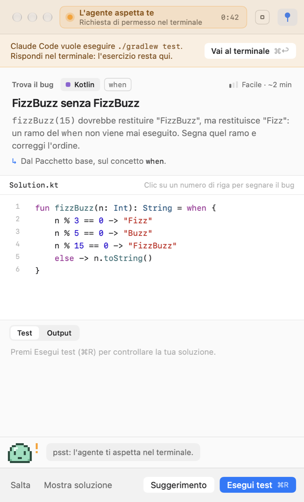
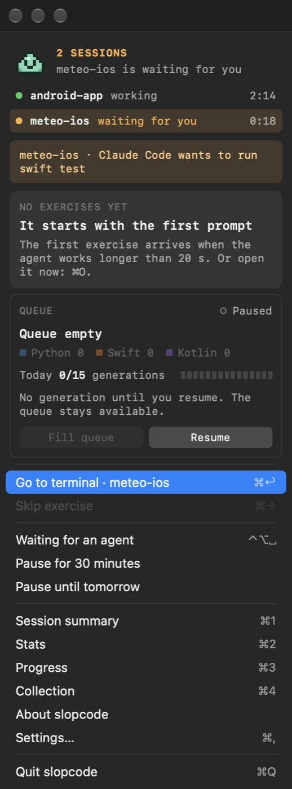
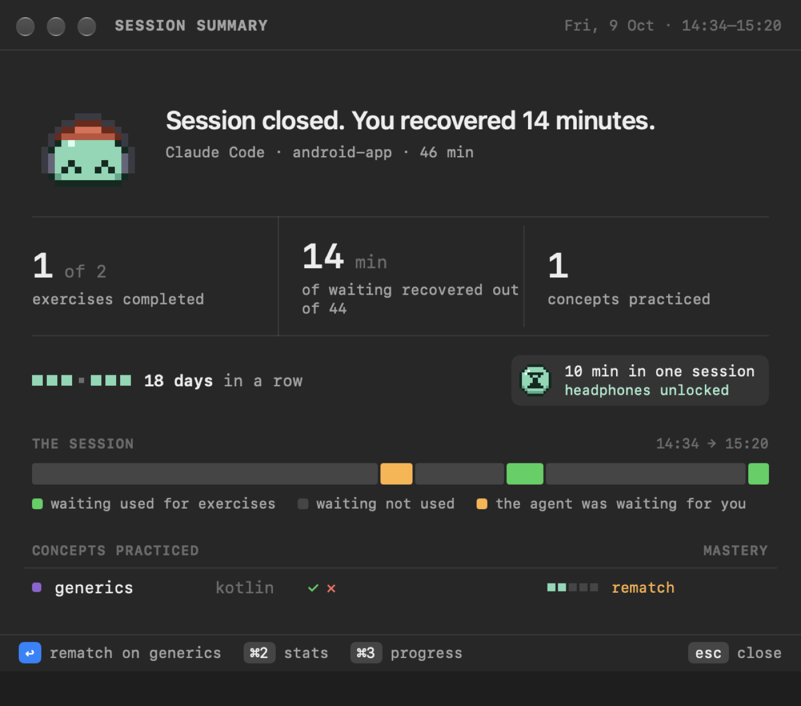
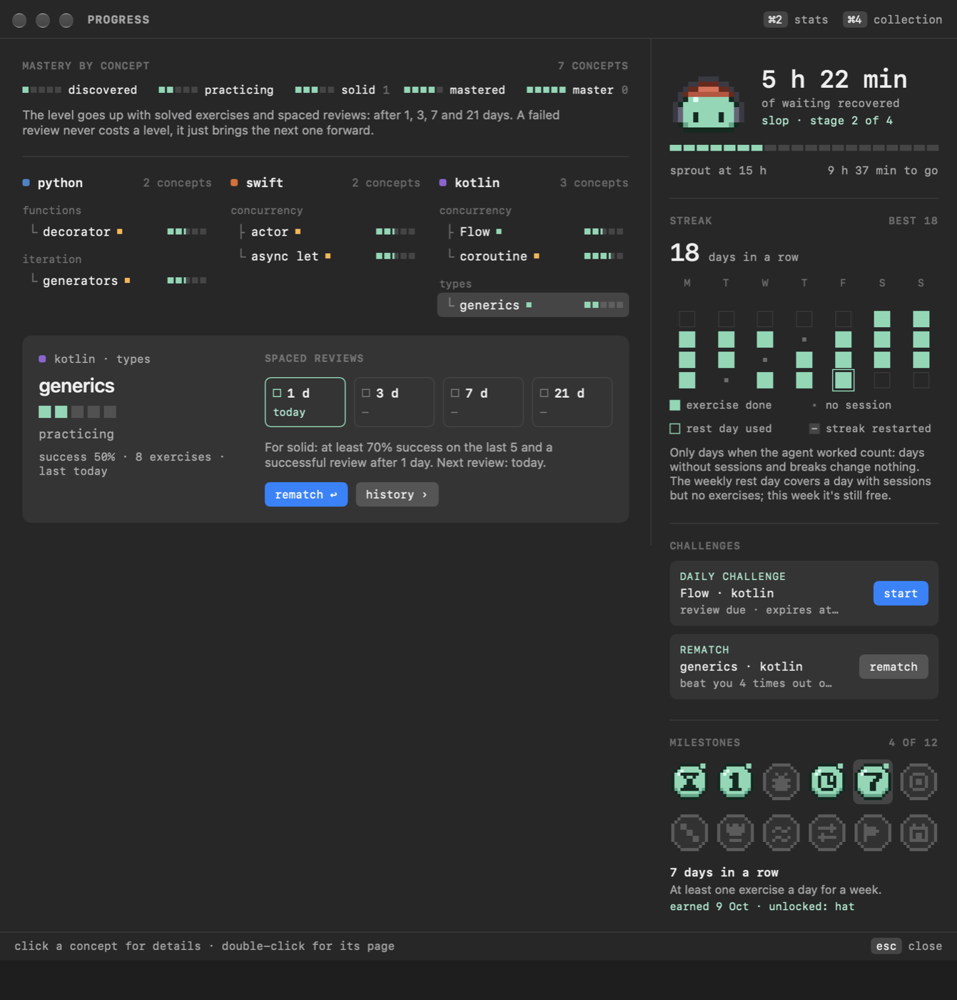
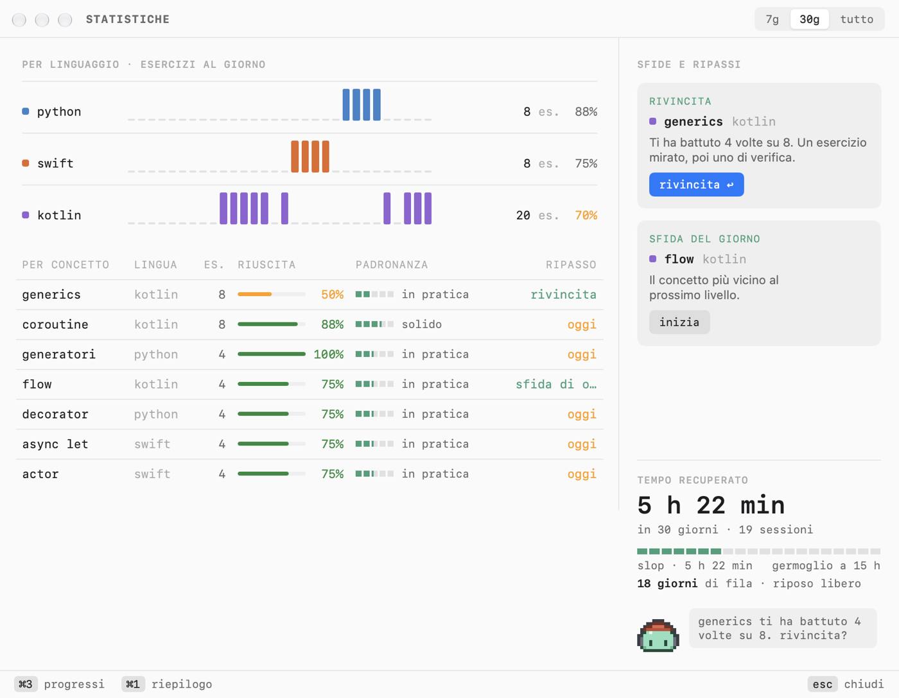

slopcode
Coding practice while your AI agent works. When Claude Code is thinking, you're training.
Download for macOS v1.0.0 · zipHow it works
Turn agent wait time into practice
01
Your agent gets to work
slopcode notices when Claude Code (or Codex) starts working and opens a slim window next to your terminal, without stealing focus.
02
A short exercise
Write a function, find the bug or answer a question in Python, Swift or Kotlin. Tests run locally on your Mac.
03
Grow with the time you win back
Mastery per concept, spaced reviews, a pressure-free streak and a mascot that grows with the hours of waiting you put to use.
Screenshots





Exercises
Written by Claude Haiku, on your own subscription
- Exercises are generated by Claude Haiku in a hidden Claude Code session using your Claude subscription, never an API key.
- Generation only runs while no agent is working, within the daily and weekly limits you choose.
- Every exercise is checked before it reaches you: the reference solution must pass the tests and the starter code must not.
- Connect a project and exercises are inspired by your own code, read strictly read-only. The exercise code is always new.
- No Claude Code yet? A built-in pack of exercises works out of the box.
Privacy
- Progress and statistics stay on your Mac. No account, no slopcode servers.
- From Claude Code hooks, slopcode receives the event, the folder and the names of the files touched, never your conversations.
- It asks before editing
~/.claude/settings.jsonand makes a backup first. Uninstalling removes only the lines it added.
Install
Requirements
- macOS 26 or later. The app is available in English and Italian.
- Claude Code with a Claude subscription, for generated exercises.
- To run tests:
python3, Xcode's command line tools for Swift (xcode-select --install),kotlincplus a JDK for Kotlin (brew install kotlin openjdk). One language is enough.
First launch
This version is not notarized by Apple yet, so on first launch macOS says it can't verify the developer. You only need to allow it once:
- Download
slopcode.zip, open it and move slopcode to Applications. - Open the app: macOS blocks it. Dismiss the alert.
- Go to System Settings › Privacy & Security and, near the bottom, click Open Anyway next to slopcode.
- The mascot appears in the menu bar and a six-step setup starts.